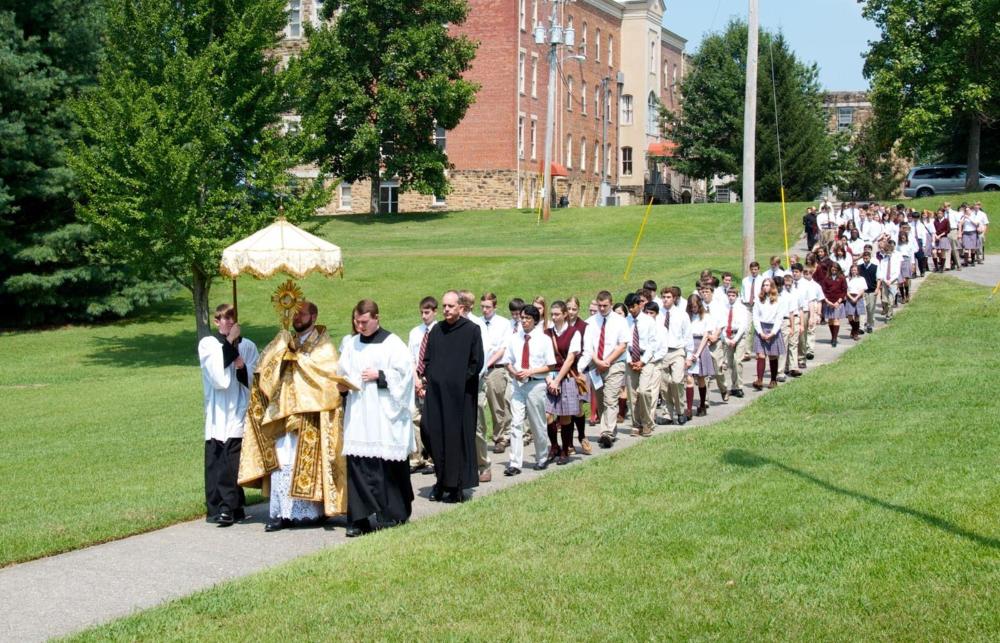
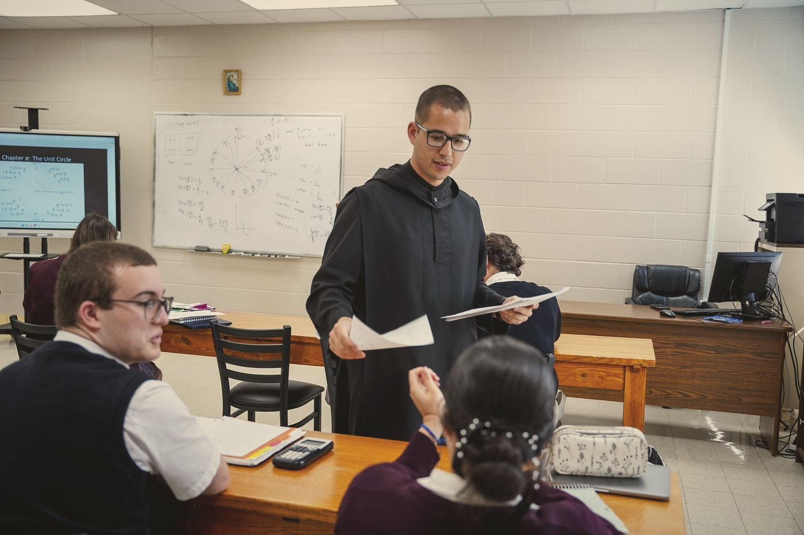
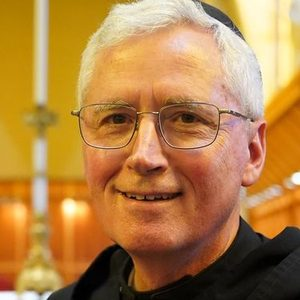
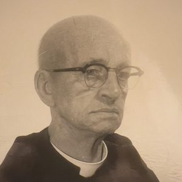
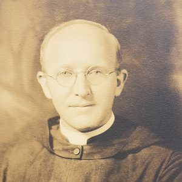
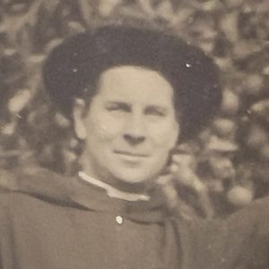
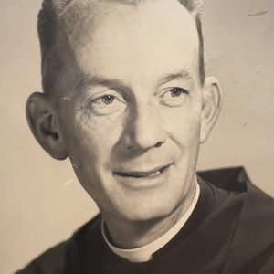

The School
St. Bernard Preparatory School
A Catholic boarding and day school for grades 7 to 12, run by the monks on the abbey's hill.
A work of the monks
Teaching since 1892
The monks opened a school the year after the abbey was founded. Over the next ninety years it was at different times a high school, a junior college, a four-year college and a seminary. After a pause, the monks opened St. Bernard Prep in 1984.
Boys and girls, day students and boarders from across the country and abroad, live and learn beside a monastery. They hear the bells for the Office and are taught by men who pray five times a day. The school's aim, in the words of its board: “cultivating a love of learning and a life of virtue in young men and women.”

The monks at the school
In the classroom, the office and the chapel
Fr. Paschal Pautler
President
A St. Bernard Prep graduate who entered the monastery two weeks after his graduation.
Fr. Joel Martin
Interim headmaster
Teacher, headmaster and president of the school since 1991.
Fr. Dominic Lee
Assistant headmaster · mathematics
Teaches math and keeps discipline, and is also subprior of the abbey.
Br. Thomas Jones
Librarian
Keeps the library of the abbey and the school, and coaches the Scholars' Bowl team.

Abbot Brendan Seipel
Chairman of the board
“SBP's future is full of hope as we continue our mission.”
And many more
Br. Leo teaches Latin, Fr. Bede, the prior, theology, Br. Raphael civics and physical education. Many others coach, keep the grounds and say Mass for the students, as monks have here for well over a century.
Teachers we remember
A century of remarkable teachers
Generations of students at St. Bernard's high school, seminary and college were taught by monks who were also scholars, scientists and artists. A few of them:

Fr. Andrew Capesius
Economics and sociology · died 1960
The first monk of the abbey to earn a doctorate (1929). For twenty-five years college librarian, said to know every one of its thousands of books by name and author.

Fr. John Capesius
Mathematics · died 1993
His brother, and a “dynamic and greatly admired” teacher of mathematics. The students' saying: “What Fr. John doesn't know, Fr. Andrew does, and what neither of them know, nobody does.”
Fr. Benedict Oberdoerfer
Chemistry, 1900–1949
Half a century of natural science and a charter member of the Alabama chapter of the American Chemical Society. When he could no longer teach, he kept his class schedule anyway, going to the chapel to pray each time the class bell rang.
Fr. Michael Morgan
Biology · died 1999
Principal of the Prep, dean of men and professor of biology, with a chaplain's years in the Korean War and in Germany between. He earned his doctorate in biology at the Catholic University of America in 1965 and came home to chair the biology department.
Fr. Stephen Radtke
English · died 1955
Doctor of English and coach of the great undefeated football team of 1926. In 1919 he founded the school newspaper, The White and Blue, later The St. Bernard News.

Fr. Patrick O'Neill
English, philosophy and drama · died 1971
A superb singer and drama coach, famous across the South for his reading of Tennyson's Enoch Arden, and a Carnegie Medal hero besides (see Heroes).
Fr. Malachy Shanaghan
English · died 1988
An Irish immigrant boy who earned a doctorate in English at Notre Dame and became a noted scholar of William Faulkner, “a professor of English par excellence” until the college closed in 1979.

Fr. Timothy Harrison
The fine arts · died 1982
Painter, sculptor, potter, musician and director, trained at Notre Dame and in Florence. His production of Anna and the King of Siam, with the Birmingham Symphony Orchestra, won acclaim across Alabama.
Fr. Aloysius Plaisance
History · died 1992
Doctor of history from St. Louis University, chairman of the history department and president of St. Bernard College, active in the Alabama Historical Association and the Alabama Academy of Science.
Source: the Necrology of St. Bernard Abbey; portraits from the abbey archives. The abbey's scholars and scientists, from the botanist Br. Wolfgang Wolf to the copyists and printers, are remembered under Scribes.
Admissions, visits and news
St. Bernard Prep has its own website
For admissions, tuition, boarding, athletics and the school calendar, visit stbernardprep.com or call the school office.